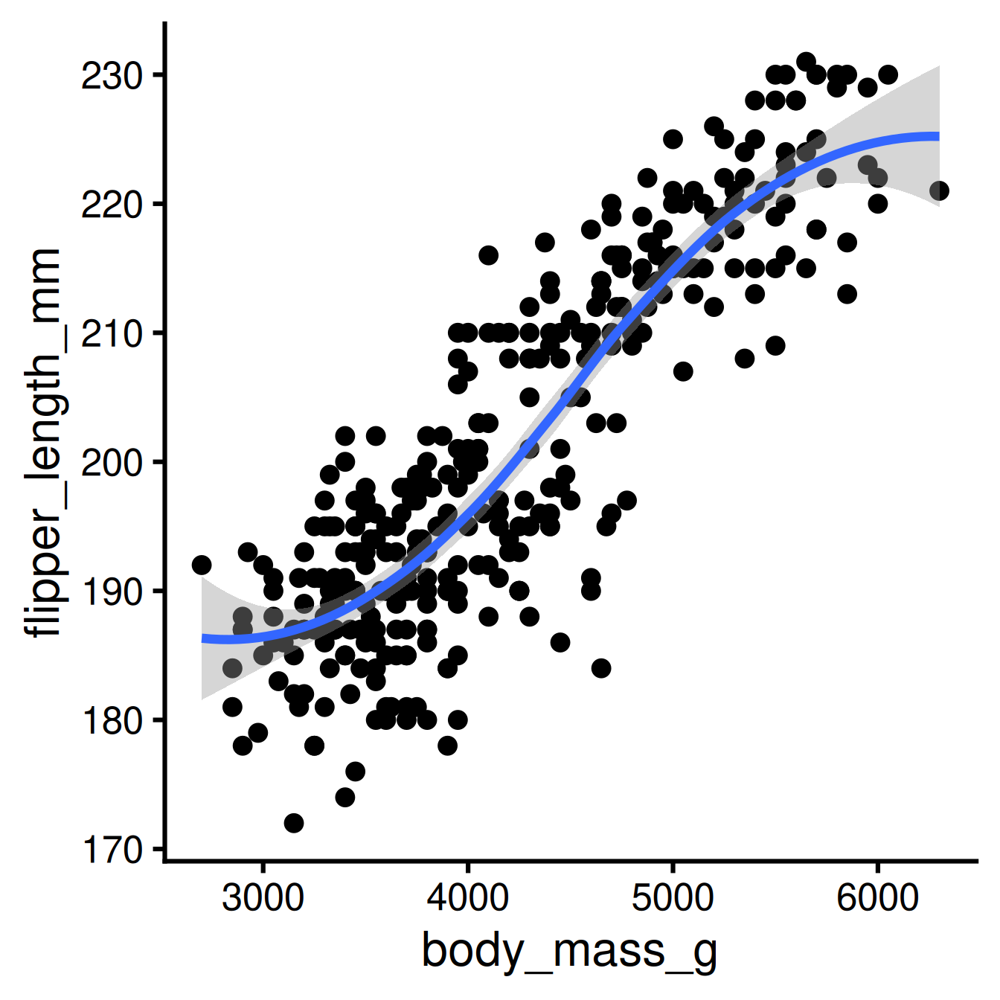
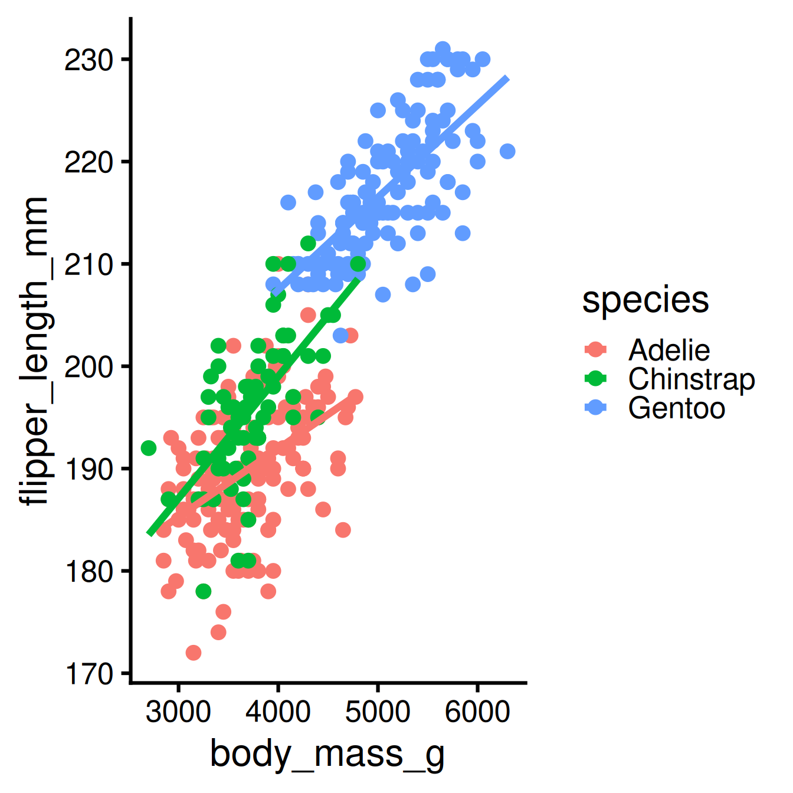
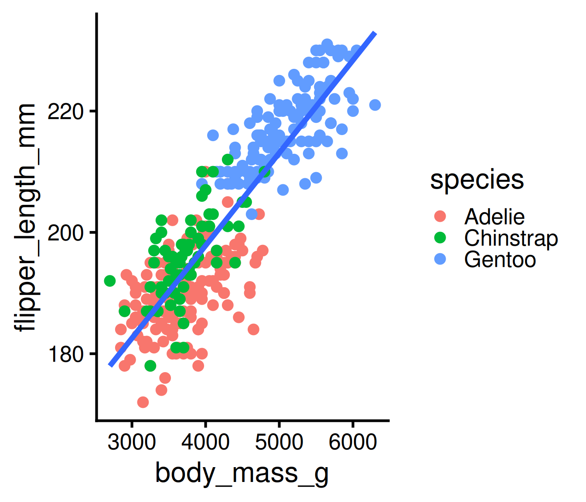
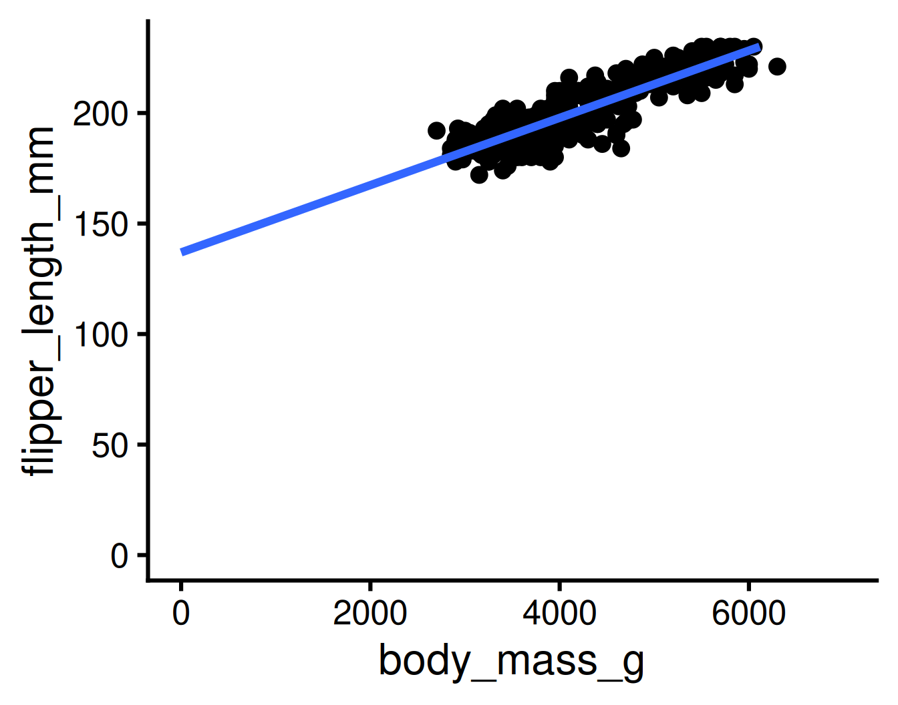
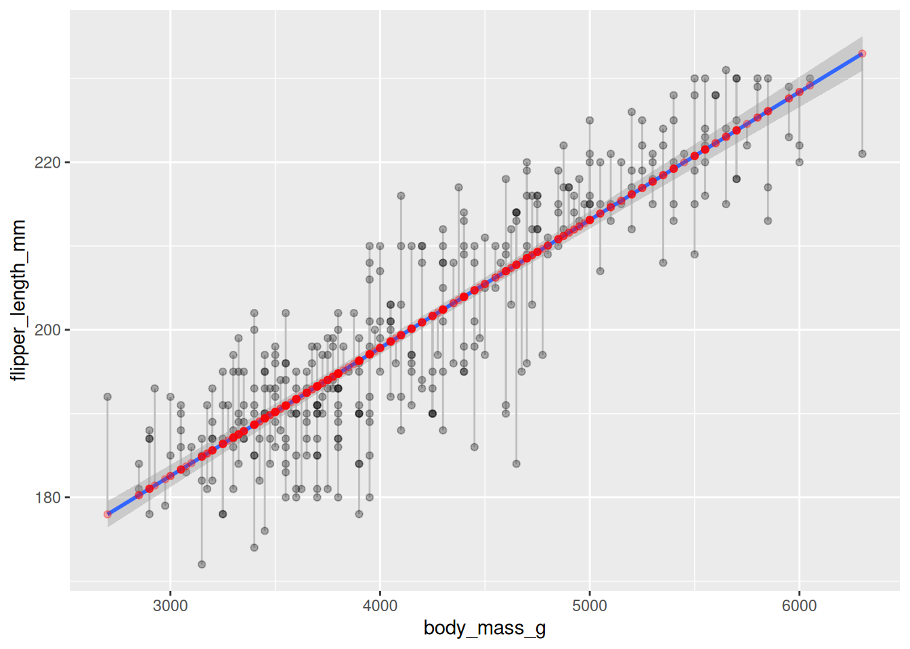

Attaching package: 'palmerpenguins'
The following object is masked from 'package:modeldata':
penguins
The following objects are masked from 'package:datasets':
penguins, penguins_raw
1 Models in Science
1.1 What is a model?
A model is an informative representation of an object, person or system.
A model is a simplified representation of the real world focusing on the essential parts for its purpose.
Scientific modeling is an activity that produces models representing empirical objects, phenomena, and physical processes, to make a particular part or feature of the world easier to
Warning: Removed 2 rows containing non-finite outside the scale range
(`stat_smooth()`).
Warning: Removed 2 rows containing missing values or values outside the scale range
(`geom_point()`).

This is a less theory-driven and more data-driven model. Why? We don’t have a simple mathematical form of the function.
2.7 Terminology variable-based models
Response variable:3 Variable whose behavior or variation you are trying to understand, on the y-axis
Explanatory variable(s):4 Other variable(s) that you want to use to explain the variation in the response, on the x-axis
Predicted value: Output of the model function.
The model function gives the (expected) average value of the response variable conditioning on the explanatory variables
Residual(s): A measure of how far away a case is from its predicted value (based on the particular model)
Residual = Observed value minus Predicted value
The residual tells how far above/below the expected value each case is
2.8 More explanatory variables
How does the relation between flipper length and body mass change with different species?
penguins |>ggplot(aes(x = body_mass_g, y = flipper_length_mm, color = species)) +geom_point() +geom_smooth(method ="lm", se =FALSE) +theme_classic(base_size =24)
`geom_smooth()` using formula = 'y ~ x'
Warning: Removed 2 rows containing non-finite outside the scale range
(`stat_smooth()`).
Warning: Removed 2 rows containing missing values or values outside the scale range
(`geom_point()`).

2.9 ggplot-hint: How to color penguins but keep one model?
Put the mapping of the color aesthetic into the geom_point command.
penguins |>ggplot(aes(x = body_mass_g, y = flipper_length_mm)) +geom_point(aes(color = species)) +geom_smooth(method ="lm", se =FALSE) +theme_classic(base_size =24)
`geom_smooth()` using formula = 'y ~ x'
Warning: Removed 2 rows containing non-finite outside the scale range
(`stat_smooth()`).
Warning: Removed 2 rows containing missing values or values outside the scale range
(`geom_point()`).

2.10 Beware of Simpson’s paradox
Slopes for all groups can be in the opposite direction of the main effect’s slope!
Warning: Removed 3 rows containing non-finite outside the scale range
(`stat_smooth()`).
Warning: Removed 3 rows containing missing values or values outside the scale range
(`geom_point()`).
Warning: Removed 10 rows containing missing values or values outside the scale range
(`geom_smooth()`).

The model predicts that penguins with zero weight still have flippers of about 140 mm on average.
Is the model useless? Yes, around zero body mass.
However, it works OK in the range of the body mass data.
2.15 Two model purposes
Linear models can be used for:
Explanation: Understand the relationship of variables in a quantitative way. For the linear model, interpret slope and intercept.
In other words: We make inference about relations in any sample of penguins.
Warning: We use the word “explain” because it is an established statistical term for describing relations. However, beware a relation is not causation!
When discussing causation, much more is needed than a statistical relation.
In substantive discussion about model output we speak about the not-necessarily causal relation or association of variables.
Prediction: Plug in new values for the explanatory variable(s) and receive the expected response value. For the linear model, predict the flipper length of new penguins by their body mass.
average flipper_length_mm\(= \beta_0 + \beta_1\cdot\)body_mass_g
3.3 Step 1: Specify model
library(tidymodels)linear_reg()
Linear Regression Model Specification (regression)
Computational engine: lm
3.4 Step 2: Set the model fitting engine
linear_reg() |>set_engine("lm")
Linear Regression Model Specification (regression)
Computational engine: lm
3.5 Step 3: Fit model and estimate parameters
Only now, the data and the variable selection comes in.
Use of formula syntax
linear_reg() |>set_engine("lm") |>fit(flipper_length_mm ~ body_mass_g, data = penguins)
parsnip model object
Call:
stats::lm(formula = flipper_length_mm ~ body_mass_g, data = data)
Coefficients:
(Intercept) body_mass_g
136.72956 0.01528
parsnip is package in tidymodels which is to provide a tidy, unified interface to models that can be used to try a range of models.
Note: The fit command does not follow the tidyverse principle the data comes first. Instead, the formula comes first. This is to relate to existing traditions of a much older established way of modeling in base R.
3.6 What does the output say?
linear_reg() |>set_engine("lm") |>fit(flipper_length_mm ~ body_mass_g, data = penguins)
parsnip model object
Call:
stats::lm(formula = flipper_length_mm ~ body_mass_g, data = data)
Coefficients:
(Intercept) body_mass_g
136.72956 0.01528
. . .
average flipper_length_mm\(= 136.72956 + 0.01528\cdot\)body_mass_g
. . .
Interpretation:
The penguins have a flipper length of 138 mm plus 0.01528 mm for each gram of body mass (that is 15.28 mm per kg). Penguins with zero mass have a flipper length of 138 mm. However, this is not in the range where the model was fitted.
3.7 Show output in tidy form
linear_reg() |>set_engine("lm") |>fit(flipper_length_mm ~ body_mass_g, data = penguins) |>tidy()
Notation from statistics: \(\beta\)’s for the population parameters and \(\hat\beta\)’s for the parameters estimated from the sample statistics.
\[\hat y = \beta_0 + \beta_1 x\]
The population parameters \(\beta_0\) and \(\beta_1\) we cannot have. (\(\hat y\) stands for predicted value of \(y\). )
. . .
Instead, we estimate \(\hat\beta_0\) and \(\hat\beta_1\) in the model fitting process.
\[\hat y = \hat\beta_0 + \hat\beta_1 x\]
A typical follow-up data analysis question is what the fitted values \(\hat\beta_0\) and \(\hat\beta_1\) tell us about the (unknown) population-wide values \(\beta_0\) and \(\beta_1\)?
The regression line shall minimize the sum of the squared residuals
(or, identically, their mean).
Mathematically: The residual for case \(i\) is \(e_i = \hat y_i - y_i\).
Now we want to minimize \(\sum_{i=1}^n e_i^2\)
(or equivalently \(\frac{1}{n}\sum_{i=1}^n e_i^2\) the mean of squared errors, which we will look at later).
3.12 Visualization of residuals
The residuals are the gray lines between predicted values on the regression line and the actual values.
Warning: Removed 2 rows containing non-finite outside the scale range
(`stat_smooth()`).
Warning: Removed 2 rows containing missing values or values outside the scale range
(`geom_segment()`).
Warning: Removed 2 rows containing missing values or values outside the scale range
(`geom_point()`).
Removed 2 rows containing missing values or values outside the scale range
(`geom_point()`).

3.13 Check: Fitted values and Residuals
Recall: Residual = Observed value - Predicted value
The Predicted values are also called Fitted values. Hence: